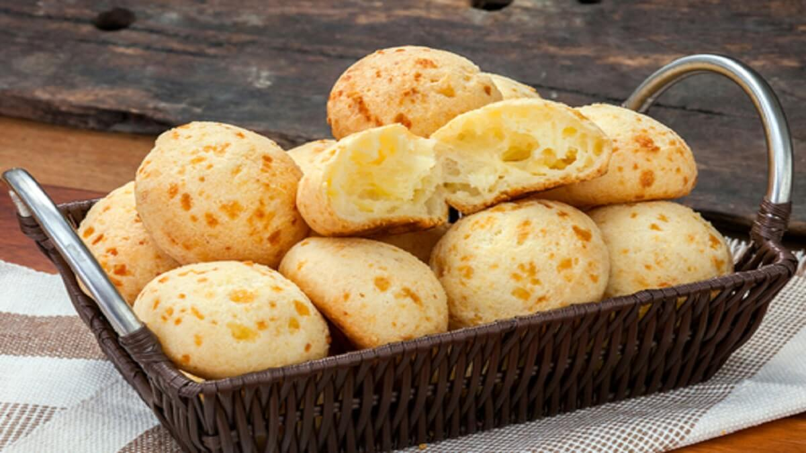

Pão de Queijo
Trata-se de um pãozinho popularmente conhecido por ser mineiro, com uma massa elástica, saborosa e cheia de queijo. O tão amado pão de queijo.

- 4 copos (americanos) de polvilho doce (500 g)
- 1 colher (sopa) tempero ou sal a gosto
- 2 copos (americano) de leite (300 ml)
- 1 copo (americano) de óleo (150 ml)
- 2 ovos grandes ou 3 pequenos
- 4 copos (americano) de queijo minas meia cura ralado
- óleo para untar